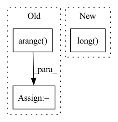

Pattern ID :25288
Before Change
scope = self.scopes[:, :, r]
// Turn one-hot encoded in-feature -> out-feature mapping into a linear index
rnge_in = torch.arange( self.out_features, device=samples.device)
scope = (scope * rnge_in).sum(-1).long()
// Map parent_indices from original "out_features" view to "in_feautres" view
parent_indices_in = parent_indices_out[scope]After Change
scopes = self.scopes[..., context.indices_repetition].permute(2, 0, 1)
rnge_in = torch.arange(self.num_features_out, device=samples.device)
scopes = (scopes * rnge_in).sum(-1).long()
indices_in_gather = indices_out.gather(dim=1, index=scopes)
// assert (indices_in_tmp == indices_in_gather).all()
In pattern: SUPERPATTERN
Frequency: 3
Non-data size: 3
Instances Fragment ID: 77204648
Project Name: braun-steven/simple-einet
Commit Name: e657fc668bd0f87f5e622a8b2549cd9e8ade437a
Time: 2022-01-11
Author: steven.lang.mz@gmail.com
File Name: simple_einet/factorized_leaf_layer.py
M Class Name: FactorizedLeaf
N Class Name: FactorizedLeaf
M Method Name: sample(3)
N Method Name: sample(3)
M Parent Class: AbstractLayer
N Parent Class: AbstractLayer
M File Name: simple_einet/factorized_leaf_layer.py
N File Name: simple_einet/factorized_leaf_layer.py
M Start Line: 63
M End Line: 120
N Start Line: 68
N End Line: 147
Before Change
for level in range(self.anchors.min_level, self.anchors.max_level + 1):
feat_size = self.feat_size[level]
steps = feat_size ** 2 * self.anchors.get_anchors_per_location()
indices = torch.arange( count, count + steps, device=cls_targets.device)
count += steps
cls_targets_out.append(
torch.index_select(cls_targets, 0, indices).view([feat_size, feat_size, -1]))
box_targets_out.append(After Change
cls_targets, _, box_targets, _, matches = self.target_assigner.assign(anchor_box_list, gt_box_list, gt_labels)
// class labels start from 1 and the background class = -1
cls_targets = (cls_targets - 1).long()
// Unpack labels.
Unpacks an array of cls/box into multiple scales.
count = 0 Fragment ID: 77204643
Project Name: rwightman/efficientdet-pytorch
Commit Name: 8244f8a93bbe8ebb5e977547b4ad7a9416ec068a
Time: 2020-10-06
Author: rwightman@gmail.com
File Name: effdet/anchors.py
M Class Name: AnchorLabeler
N Class Name: AnchorLabeler
M Method Name: label_anchors(3)
N Method Name: label_anchors(3)
M Parent Class: object
N Parent Class: object
M File Name: effdet/anchors.py
N File Name: effdet/anchors.py
M Start Line: 363
M End Line: 377
N Start Line: 350
N End Line: 360
Before Change
else:
lam = 1
batch_size = x.shape[0]
index = np.arange( batch_size)
np.random.shuffle(index)
mixed_x = lam * x + (1 - lam) * x[index, :]
After Change
pred=model(to_tensor(mixed_x,requires_grad=True))
if get_backend()=="pytorch":
this_loss = lam * self.loss_criterion(pred, y_a.long() ) + (1 - lam) * self.loss_criterion(pred, y_b.long())
elif get_backend()=="tensorflow":
this_loss = lam * self.loss_criterion(pred, y_a) + (1 - lam) * self.loss_criterion(pred,y_b)
Fragment ID: 77204646
Project Name: allanyiin/trident
Commit Name: 2e38b10659e16eb41f74326254c44564d161500e
Time: 2020-05-17
Author: allan@asiaminer.com.tw
File Name: trident/callbacks/regularization_callbacks.py
M Class Name: MixupCallback
N Class Name: MixupCallback
M Method Name: on_loss_calculation_end(2)
N Method Name: on_loss_calculation_end(2)
M Parent Class: RegularizationCallbacksBase
N Parent Class: RegularizationCallbacksBase
M File Name: trident/callbacks/regularization_callbacks.py
N File Name: trident/callbacks/regularization_callbacks.py
M Start Line: 46
M End Line: 70
N Start Line: 54
N End Line: 90